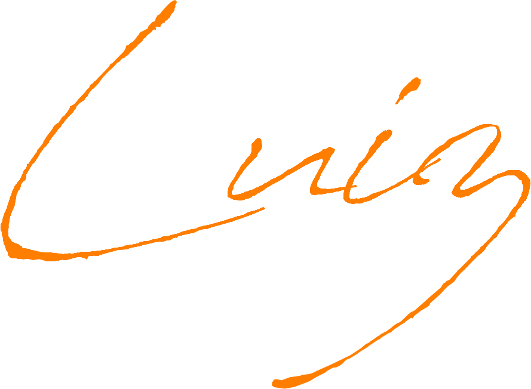
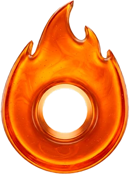

8+
anos de experiência criativa

8 anos criando. 1 ano reinventando com IA. Design, marketing digital e web com inteligência artificial para projetos que precisam de posicionamento, impacto e resultado.
➜ Vamos criar algo juntos?Photoshop · Illustrator · VS Code e Antigravity · ChatGPT · Claude · Manus · Freepik Spaces
anos de experiência criativa
peças visuais para campanhas e lançamentos
estratégias de lançamento dominadas
integrada ao processo criativo
SOBRE
Sou designer com graduação em Design (2019) e uma década mergulhado no universo criativo. Nos últimos tempos, uni minha visão estética a ferramentas de inteligência artificial para criar soluções que vão além do visual.
Crio experiências que pensam em conversão, posicionamento e impacto real.
➜ Ver experiênciaEXPERIÊNCIA
OUT/2024 - ATUALMENTE · Projetos de marketing digital para experts de alto faturamento.
Design bonito chama atenção. Design estratégico move o negócio.
➜ Vamos criar algo juntos?HABILIDADES
UI/UX, Branding, Identidade Visual, Copy Visual e Estratégia de Lançamento Digital trabalhando juntos para construir presença, narrativa e conversão.
POR QUE BRUNO?
Uma visão estratégica de marketing aplicada a cada pixel do design, com IA integrada ao fluxo criativo para entregar mais rápido sem perder qualidade.
Vivência real em projetos 6 em 7 e 6 em 1, com foco em resultado.

Mais velocidade de produção sem abrir mão de repertório, critério e acabamento.
Design pensado para posicionamento, narrativa, valor percebido e conversão.
Mais de 8 anos de projetos, campanhas e peças que realmente vendem.
FERRAMENTAS
Photoshop · Illustrator · VS Code e Antigravity · ChatGPT · Claude · Manus · Freepik Spaces.

Se você precisa de design estratégico, landing page, identidade visual ou uma presença digital com IA, me chama e vamos desenhar o próximo passo.
➜ Chamar no WhatsAppDesigner · Marketing Digital · Web com IA
DÚVIDAS FREQUENTES
Landing pages, identidades visuais, peças para campanhas, materiais para lançamentos, UI/UX e design de marketing digital.
Sim. A IA entra como acelerador criativo, sem substituir estratégia, repertório visual e acabamento profissional.
Sim. Tenho experiência com estratégias 6 em 7 e 6 em 1, landing pages e criativos focados em conversão.
Você pode enviar e-mail para brunoluizoliveira00@gmail.com ou chamar no WhatsApp pelo telefone (22) 99976-1278.